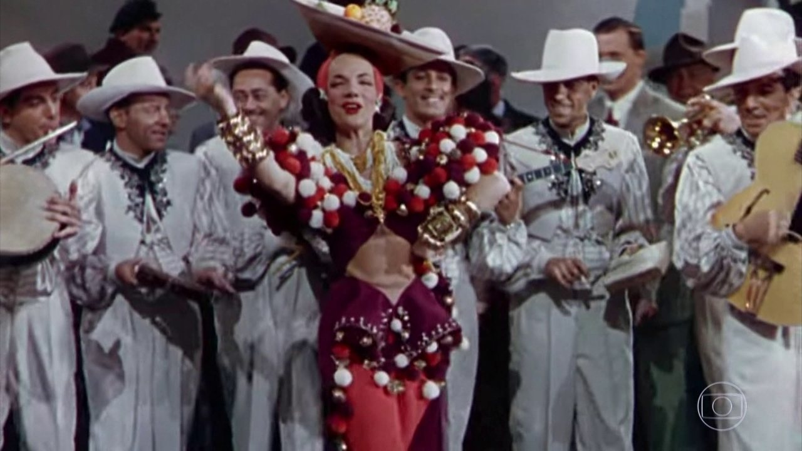

Cantora, atriz e dançarina brasileira conhecida mundialmente como “Brazilian Bombshell” e “Pequena Notável”.

Carmen Miranda GOIH OMC (nascida Maria do Carmo Miranda da Cunha; Marco de Canaveses, 9 de fevereiro de 1909 — Beverly Hills, 5 de agosto de 1955) foi uma cantora, dançarina, e atriz luso-brasileira. Sua carreira artística transcorreu no Brasil e Estados Unidos entre as décadas de 1930 e 1950. Trabalhou no rádio, no teatro de revista, no cinema e na televisão. Foi considerada pela revista Rolling Stone como a 15ª maior voz da música brasileira, sendo um ícone e símbolo internacional do Brasil no exterior.
„Nunca segui o que dizem que 'está na moda'. Acho que a mulher deve usar o que lhe cai bem. Por isso criei um estilo apropriado ao meu tipo e ao meu gênero artístico.“
A Importância de Carmen Miranda na Moda Brasileira
A cultura brasileira é sinônimo de alegria, cores vibrantes, sensualidade e Carmen Miranda. A cantora portuguesa de alma brasileira se tornou um ícone de estilo nos anos 40, sendo uma das primeiras referências da moda nacional. Na década de 40 acontece o apogeu de Hollywood, a Segunda Guerra Mundial e no Brasil, destaque para Carmem
Na década de 40 acontece o apogeu de Hollywood, a Segunda Guerra Mundial e no Brasil, destaque para Carmem Miranda que fez sucesso tanto em terras nacionais como nos Estados Unidos, divulgando a cultura latino-americana. Foi a primeira brasileira a lançar moda, inclusive nos EUA – o “Miranda look” que foi adaptado e usado nas ruas em todo mundo ocidental e ainda hoje influencia muitos estilistas que nela buscam inspiração.
Frutas na cabeça, colares, babados, saias rodadas, turbantes e muitas cores.Se hoje falamos sobre um DNA brasileiro na moda, almejado internacionalmente e explorado por estilistas da atualidade, devemos lembrar que desde os anos 1930, com o reconhecimento e projeção de Carmen Miranda, esse “DNA” ganhou status e passou de “traje típico” para um orgulho nacional.
Uma das brasileiras mais ilustres do país, na verdade nasceu em Portugal no ano de 1909, sob o nome de Maria do Carmo Miranda da Cunha. Chegou aqui com pouco mais de 10 meses de idade. Sua carreira artística e multimidiática transcorreu entre as décadas de 1930 e 1950. Em 20 anos de carreira, deixou sua voz registrada em 279 gravações somente no Brasil e mais 34 nos Estados Unidos. Balançou a Era do Rádio por aqui e chegou até Hollywood, onde chegou a ser uma das estrelas mais bem pagas. Ficou conhecida como Brazilian Bombshell (bomba brasileira).
Ela nunca foi seguidora da moda. Usava o que sentia que favorecia o seu visual no palco e o seu tipo físico. Sapatos com saltos plataformas de 20cm e turbantes tropicais davam um pouco mais de altura para os 1,52cm da “Pequena Notável”.